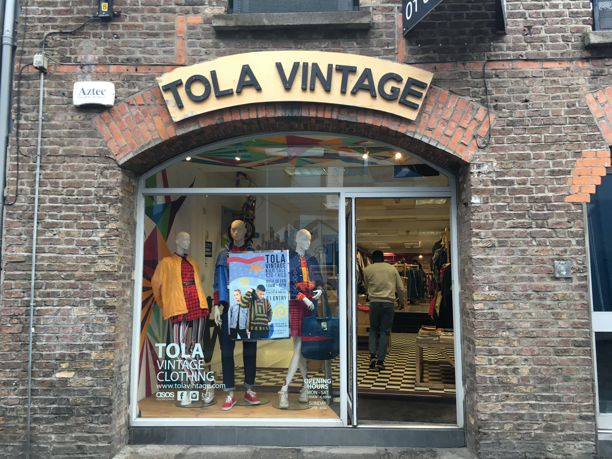
Tola Vintage
Tola vintage is a vintage clothing store in a brick building selling designer & reworked eighties &
nineties items.
Tola Vintage's aesthetic and popularity has even gotten attention from celebrities,
with artists such as Ariana Grande & Dblock Europe being seen shopping there
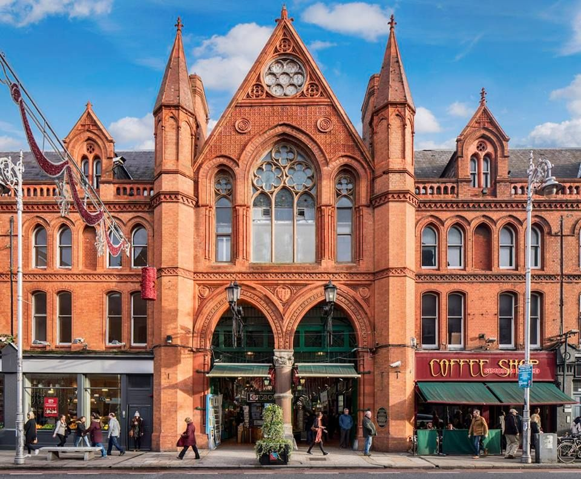
George's Street Arcade
George's Street Arcade is a shopping centre on South Great George's Street in Dublin. It is a Victorian
style red-bricked indoor market of stalls and stores. It opened in 1881 as the South City Markets
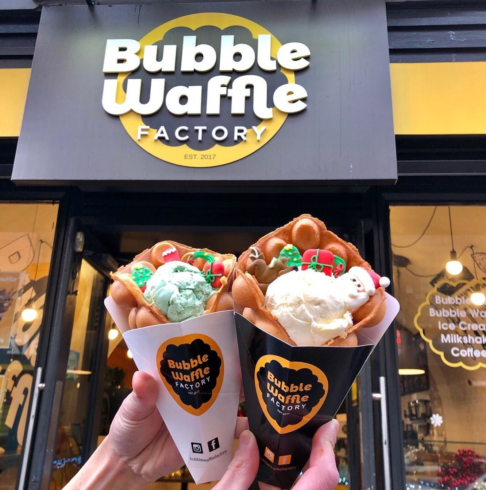
Bubble Waffle Factory
Busy dessert shop specialising in ice cream-topped waffles & bubble tea in a snug interior. Bubble Faffle
Factory is in a central position, 1 min away from the famous Ha' penny Bridge
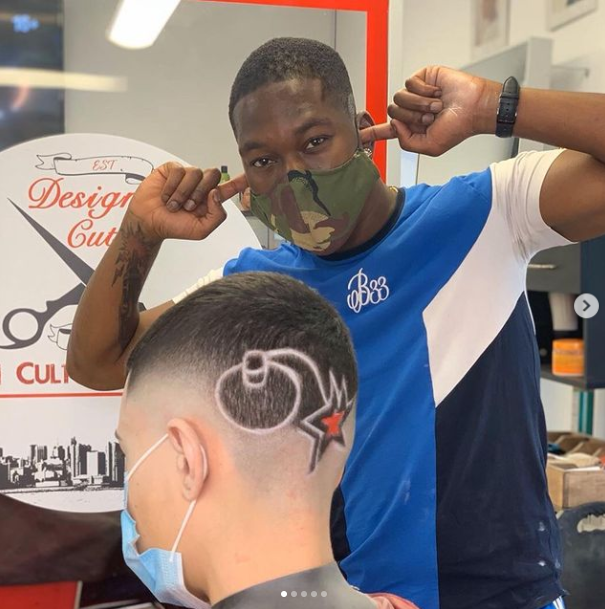
Designer Cuts - Multicultural Barbers
Designer Cuts is an Irish barbershop that specialises in all hair types & textures. This barbershop has
garnered a lot of recent popular due to their world class barbers. If you're ever in Dublin and in need
of a haircut, Designer Cuts is highly recommended
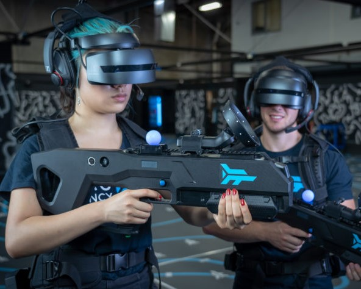
Zero Latency VR
Zero latency immerses visitors into a free roam Virtual Reality expierience that is unique to anywhere
else. Customers are Free to explore with Room to move in a space the size of a tennis court. There are
no cables and wires which helps with the immersion. Up to 8 friends are able to come along.
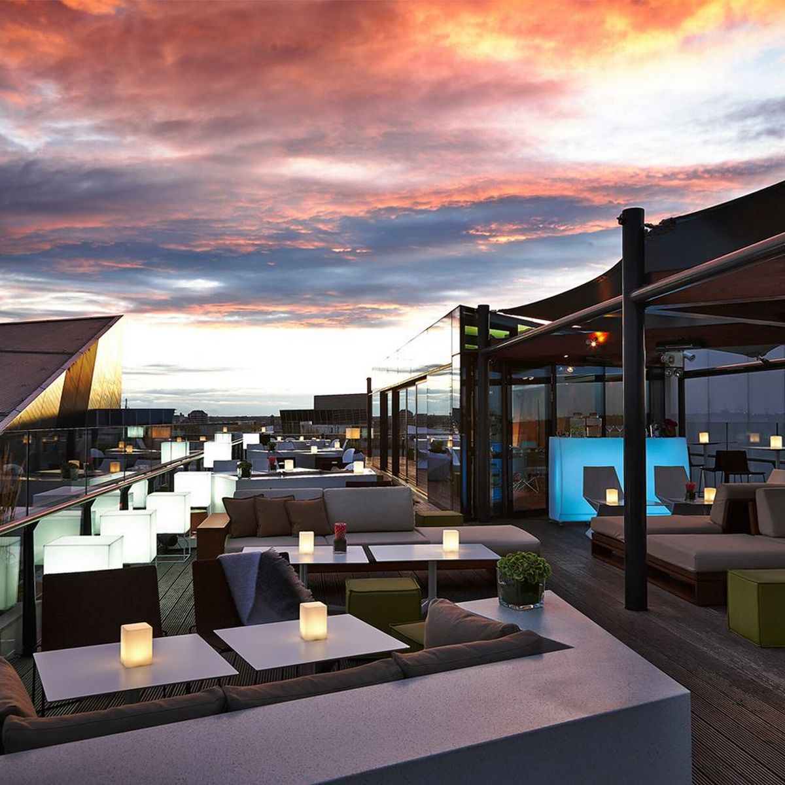
Marker Hotel Terrace Bar
The terrace bar at the Marker Hotel gives you a view of the whole city.You could do a lot worse than here
to sit back, relax and have a pint.
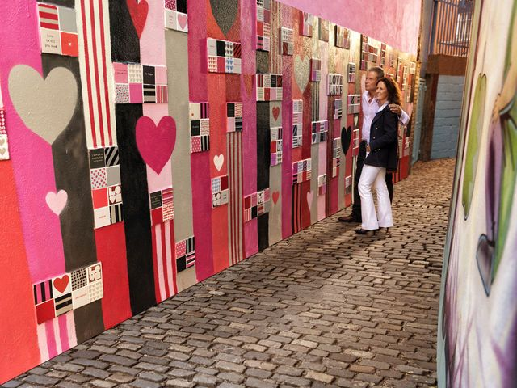
Love Lane
Crampton Court in Temple bar has been renamed Love Lane and is now one of the brightest and best lanes in
Dublin. The lane itself is an Instagram favourite, with many large artworks and some tiny nuances you
might miss if you’re not paying attention.
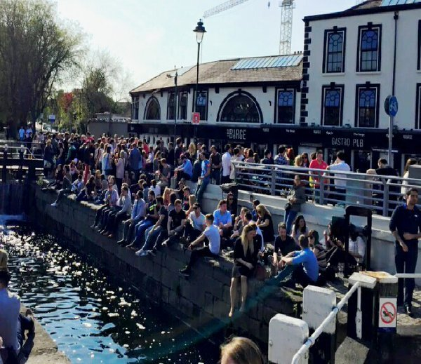
The Barge
A landmark destination with no less than 4 separate bars, a daytime pub menu and nightly discos. The
venue itself has become fairly trendy in the last few years, blending tradition with modern style. Their
outdoor canal area is a must on a warm summer evening
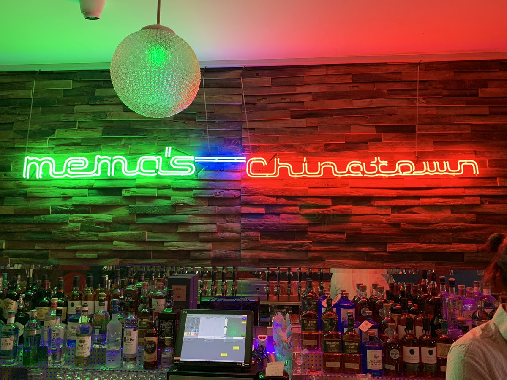
MeMa's
MeMa's dive bar in Dublin offers craft beers, cocktails, pizza & chilled out funky vibes!
All located on Parnell Street in the heart of Dublin City Centre. Dog Friendly, Beer Garden with DJs
every weekend.
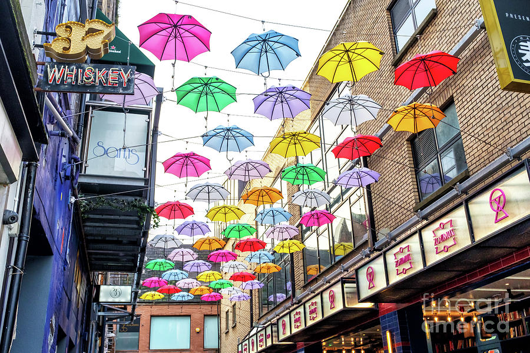
Anne's Lane
If you happen to find yourself walking around Dublin you might have a look around Anne's Lane just off
South Anne Street in the city centre. You'll find one of the most Instagrammable places in Dublin
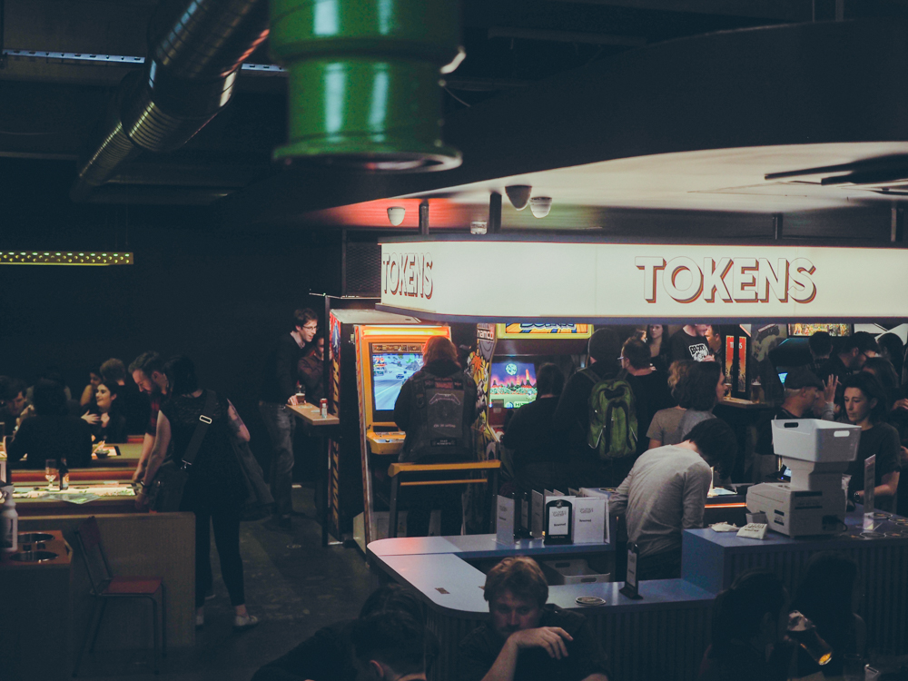
Token
Token is a multi-award winning restaurant, bar, retro arcade, pinball parlour and event space. They have
over 40 machines, 3 bars, an extensive food menu for all tastes, and one of the more interesting
cocktail list around!
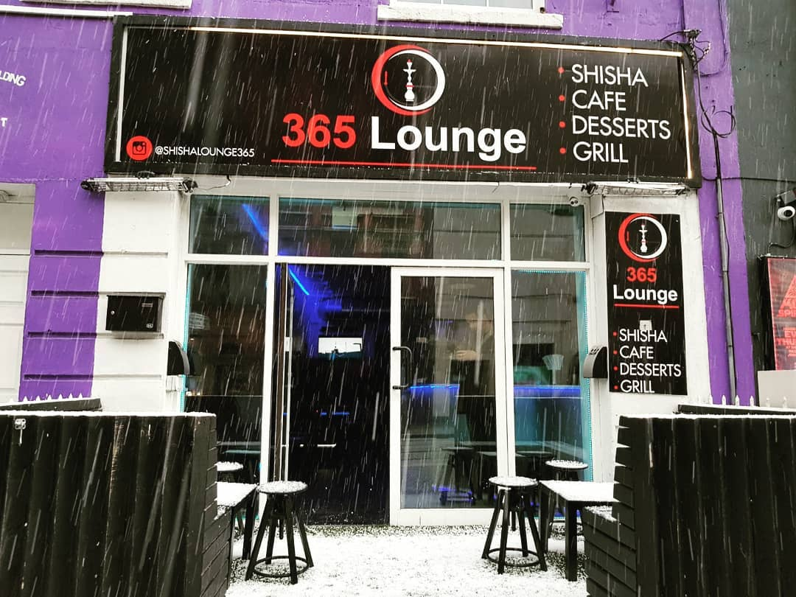
365 Shisha Lounge
365 Shisha Lounge is a shisha bar located in the heart of dublin city right next to the iconic Academy
venue. 365 Shisha Lounge srves grilled food, desserts , tea and of course hookahs.
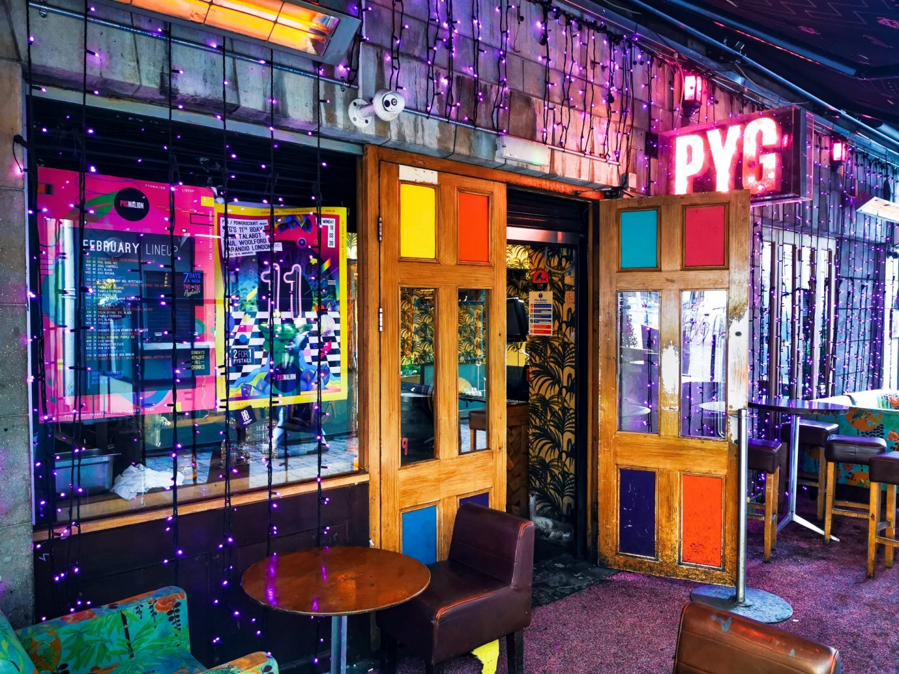
Pygmalion
Pygmalion is an Elegant setting for world cuisine with a focus on Mediterranean, Modern European and
tapas dishes.